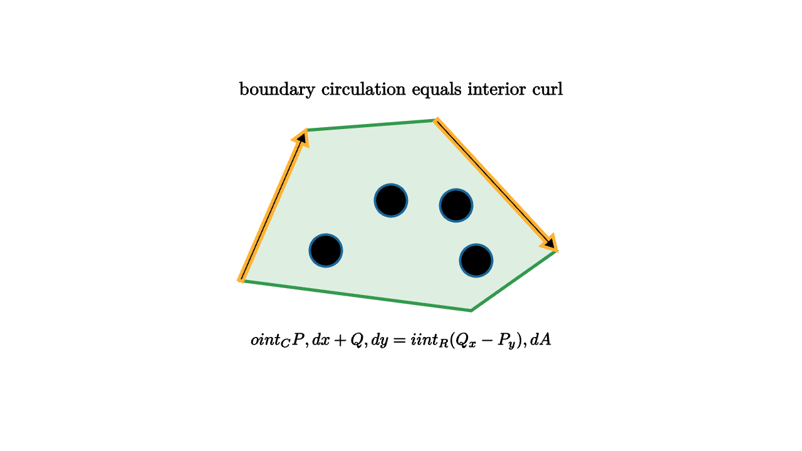

Green Theorem Turns Boundaries Into Area
Suppose you walk around the edge of a pond and measure how much the water current helps your motion along the shoreline. You could do that boundary measurement directly. Green's theorem says the same number can be found another way: add up the tiny spinning tendencies inside the pond.
For a vector field
Green's theorem says
where $C$ is a positively oriented simple closed curve around the region $R$.
The left side is circulation around the boundary. The right side is total curl over the interior.

source
let soft = |col, amount| lerp(WHITE, col, amount)
let region_pts = [1.6l + 0.55d, 0.95l + 0.95u, 0.35r + 1.05u, 1.55r + 0.25d, 0.7r + 0.85d]
mesh curls = [
center{0.75l + 0.25d} stroke{BLUE, 2.2} Circle(0.16),
center{0.1l + 0.25u} stroke{BLUE, 2.2} Circle(0.16),
center{0.55r + 0.2u} stroke{BLUE, 2.2} Circle(0.16),
center{0.75r + 0.35d} stroke{BLUE, 2.2} Circle(0.16)
]
mesh diagram = [
fill{soft(GREEN, 0.16)} stroke{GREEN, 3} Polygon(region_pts),
stroke{ORANGE, 3} Arrow(1.6l + 0.55d, 0.95l + 0.95u),
stroke{ORANGE, 3} Arrow(0.35r + 1.05u, 1.55r + 0.25d),
curls,
center{1.35u} Text("boundary circulation equals interior curl", 0.66),
center{1.15d} Tex("\\oint_C P\\,dx+Q\\,dy=\\iint_R (Q_x-P_y)\\,dA", 0.60)
]The theorem feels surprising until you imagine cutting the region into many tiny squares. Each tiny square has its own circulation around its little boundary. When two squares share an edge, one square traverses that edge in one direction and its neighbor traverses it in the opposite direction. The shared contributions cancel.
After all interior edges cancel, only the outer boundary remains. What survives is exactly the circulation around $C$. The right side adds the curl density over all the little squares, which is the same bookkeeping at the infinitesimal scale.
This cancellation picture is the heart of the theorem. Green's theorem is a local-to-global statement: many tiny rotations combine, and the hidden interior boundaries disappear in pairs.
source
let soft = |col, amount| lerp(WHITE, col, amount)
let region_pts = [1.6l + 0.55d, 0.95l + 0.95u, 0.35r + 1.05u, 1.55r + 0.25d, 0.7r + 0.85d]
"Boundary"
mesh scene = [
fill{soft(GREEN, 0.14)} stroke{GREEN, 3} Polygon(region_pts),
stroke{ORANGE, 3} Arrow(1.6l + 0.55d, 0.95l + 0.95u),
stroke{ORANGE, 3} Arrow(0.35r + 1.05u, 1.55r + 0.25d),
center{1.35u} Text("start with the outside walk", 0.68)
]
play Fade(0.7)
"Tiles"
scene = [
fill{soft(GREEN, 0.12)} stroke{GREEN, 3} Polygon(region_pts),
stroke{soft(LIGHT_GRAY, 0.05), 1.4} LineGrid([-1.4, 1.4, 5], [-0.75, 0.75, 4], 1),
stroke{ORANGE, 3} Arrow(1.6l + 0.55d, 0.95l + 0.95u),
stroke{ORANGE, 3} Arrow(0.35r + 1.05u, 1.55r + 0.25d),
center{1.35u} Text("interior edges cancel in pairs", 0.66)
]
play Trans(1.0)
"Curl Sum"
scene = [
fill{soft(GREEN, 0.12)} stroke{GREEN, 3} Polygon(region_pts),
center{0.75l + 0.25d} stroke{BLUE, 2.4} Circle(0.16),
center{0.1l + 0.25u} stroke{BLUE, 2.4} Circle(0.16),
center{0.55r + 0.2u} stroke{BLUE, 2.4} Circle(0.16),
center{0.75r + 0.35d} stroke{BLUE, 2.4} Circle(0.16),
center{1.35u} Text("the remaining sum is area curl", 0.66),
center{1.15d} Tex("\\iint_R \\operatorname{curl}\\mathbf F\\,dA", 0.64)
]
play Trans(1.0)Orientation is part of the statement. Positive orientation means walking counterclockwise around the boundary, keeping the region on your left. Reverse the walk, and the boundary integral changes sign. The interior curl integral also carries the same orientation convention.
A useful computational example is
Here
So Green's theorem gives
That means area can be measured by walking around the boundary with the right integrand. This idea appears in computational geometry under the shoelace formula, where a polygon's area is computed from its vertices. Green's theorem is the smooth version of that boundary-to-area conversion.
It also explains why vector calculus theorems come in families. Green's theorem, the divergence theorem, and Stokes' theorem all say that a boundary measurement equals an accumulated interior measurement. The boundary may be a curve around a region or a surface around a volume. The operator may be curl or divergence. The shape changes, and the bookkeeping principle remains.
Holes and boundary direction
Regions with holes add one more orientation lesson. The outside boundary is walked counterclockwise. The boundary of a hole is walked clockwise, because the region should stay on your left as you walk each component. That clockwise inner boundary is how the cancellation picture keeps working.
If the region is an annulus, the interior grid still cancels shared edges. What remains is the outer rim and the inner rim. The inner rim has the opposite direction because it is the edge of a missing piece. Green's theorem handles both boundaries in one sum.
This is useful for fluid and electromagnetic pictures. A hole can represent an obstacle, a wire, or a forbidden region. Circulation measured around the accessible boundary records curl in the accessible area, with the obstacle boundary included in the correct direction.
Choosing the easier side
Green's theorem is also a computational strategy. Sometimes the boundary integral is easier. A polygon's area can be computed by summing vertex pairs around the boundary, which avoids subdividing the interior by hand. Sometimes the area integral is easier. If curl is constant, the right side becomes that constant times area.
For example, with
we have $Q_x-P_y=2$. Then
A complicated boundary can be turned into an area computation, or a complicated area can be turned into a boundary computation. The theorem gives permission to choose the side that exposes the structure of the problem.
The discrete shadow
Computational geometry often uses a polygon version of this theorem. For vertices $(x_i,y_i)$ around a simple polygon, the shoelace formula says
That formula is a boundary sum. It is Green's theorem with straight edges and a special vector field chosen so curl equals one. A theorem from calculus becomes an algorithm for a mesh or drawing program.
For a student, the best first understanding is the tiled-region cancellation argument. Draw many small loops. Let shared edges cancel. Watch the outside curve survive. Then the formula becomes a compact record of a visual event: local spin added across area becomes circulation along the rim.